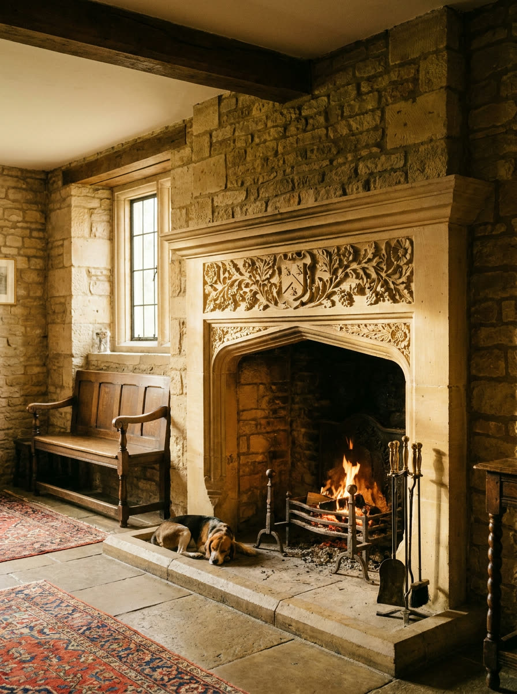

The work
The stone
Bath and Cotswold,
matched to the bed
We buy block from the same two quarries every time, so the colour and the grain match what is already standing on your wall. Wrong bed, wrong stone, and it weathers apart inside ten years.
